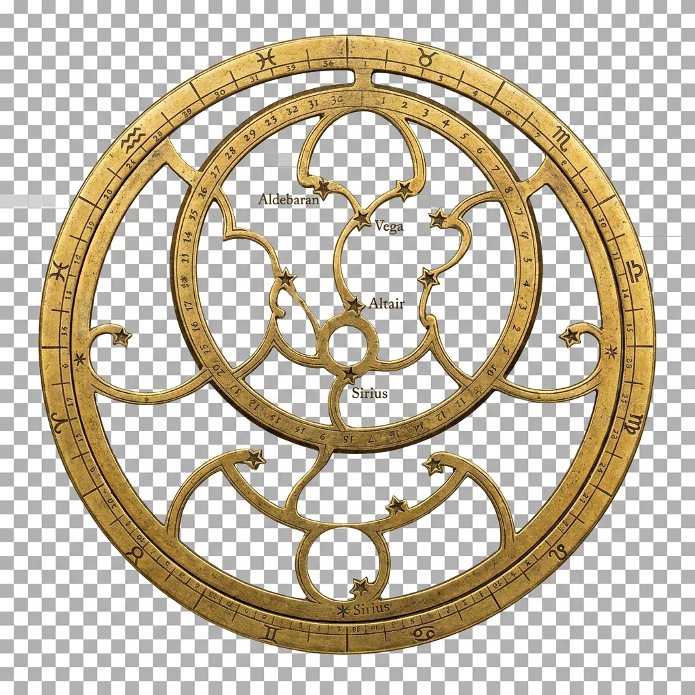
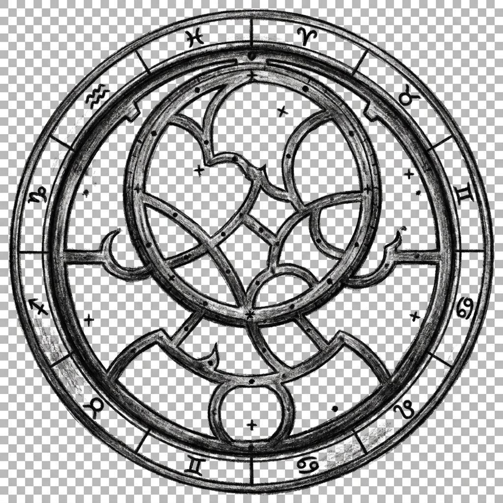
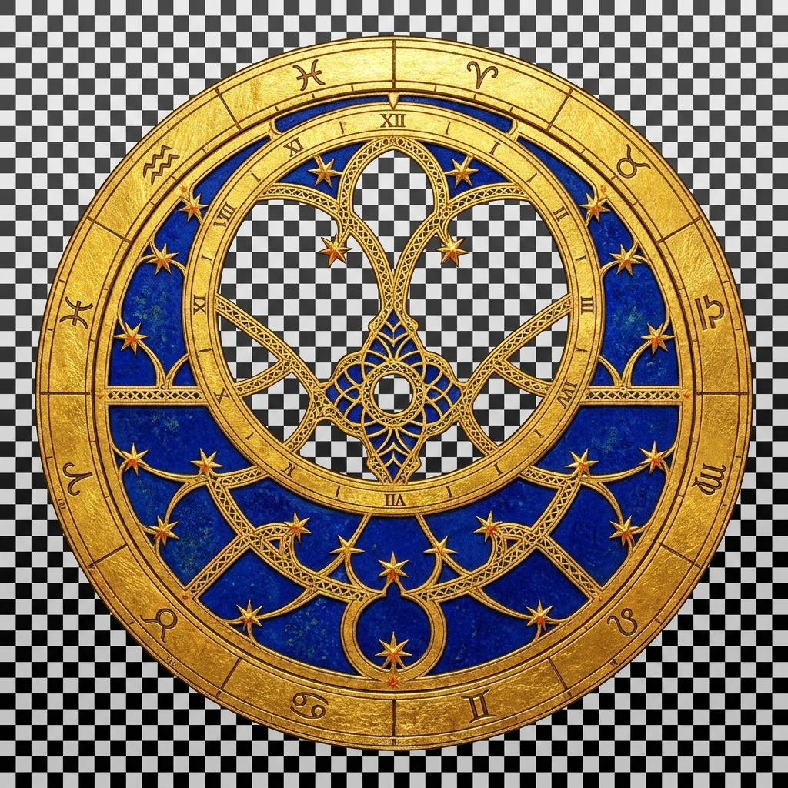

Astrolabe — three rete variants
SVG mater + alidade are identical across all three; the rete carries the style

A — Persian Brass
Engraved-brass rete with named-star labels

B — Charcoal & Parchment
Matches the existing site illustration style

C — Illuminated
Gold leaf and lapis-lazuli, Latin-manuscript style